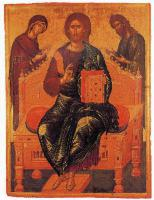

| St George on Horseback, Slaying the Dragon
1425-50
|
 | Virgin Eleousa
Icon of the Mother of God and Infant Christ |
 | Panagia Glykophilousa
Icon of the Mother of God Glykophilousa |
 | Virgin Kardiotissa
|
 | Virgin Glykophilousa
|
 | Saint Anne with the Virgin
|
 | St George riding
|
 | The Congregation of the Archangels
|
 | St John the Baptist
|
 | Christ Pantocrator on a Vine with Saints
|
 | Christ Pantocrator on a Vine with Saints
|
 | Christ Pantocrator on a Vine with Saints
|
 | Man of Sorrows
Jesus, Mary and Saint John |
 | Christ Pantokrator
|
|  | Christ Enthroned
|
 | Christ Enthroned
|